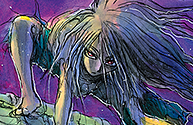
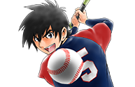

This week's Weekly Shonen Sunday posting order & comments from the author.

Question of the week
“July 3rd is “Ice Cream day!” Do you have a favorite Ice Cream?”
MAO

Haagen-Dazs
Be Blues!

Hazel Nut.
Detective Conan

Stuff like Chocolate crunch, and Uji Kintoki Kakigori (lol) (TN- Kakigori is shaved ice, and Ujikintoki is a specific kind with shaved ice on the bottom and green tea syrup/red bean paste on the top.)
Tonikaku Cawaii

I love Stawberries (Heart)
Maiko-san chi no Makanai-san

A mixture of things.
Souboutei Kowasubeshi

I love Ogura Ice cream. I dunno if the Melon flavor is still around though.
Ponkotsu-chan Kenshochuu

I'm a fan of Azuki and Rum Rasin. Oh and Choco Monaka Jumbo. (TN- Monaka is a kind of sweet cake, though the ice cream version itself is closer to ice cream wafers.)
Yuko sae tatakaeba

Pino's Coffee brand!!
Chrono Magia: Infinity Gear

The High Schools in my area have had 10 rank ice cream.
Maoujo de Oyasumi

I love Yukimi Daifuku! I can't stand having only one.(TN- A brand of mochi Ice Cream.)
Sokyuu no Ariadne

I love Chocolate.
Ryu Return
The first oneshot I ever read was in a Shounen Sunday issue my father picked up on a whim, so I'm incredibly grateful.
Komi-san wa komyusho desu
The small Donuts ice cream that Seven eleven sells is awesome!!
SWITCH
NISSEI's Ice Cream from Hokkaido.
Undine ha Kyou mo Koi wo suru ka?

Affogato!! It's stupid good!
Kimi wa 008
I love Chocomint.
Major 2nd

Yukimi Daifuku.
Hoankan Evans no Uso ~Dead or Love~

There was a time where White Bear was the only correct answer for me, but nowadays I don't have a particular favorite.
Fire Rabbit!!

From time to time I like eating Musho's “MOW” Vanilla flavor.
Amano Megumi wa suki darake!
My destination is “Rich Milk Vanilla flavor”. If I see that anywhere then I'm buying it without question.
Gofun go no Sekai
If you're a man you have to eat Garigari-kun! (TN- A very popular Popsicle in Japan.)
Tantei Xeno to Nanatsu no Satsujin Misshitsu

I'm in the straightforward Vanilla faction.
Daiku no Hato
Choco mint.
Anonatsu 1959
Country Ma'am Ice Cream.
Youkai Giga

Any ice cream I can eat on a 39 degree (Celsius) day that feels like it's melting.
Tokaichi Hitoribocchi Nouen
Palm and Cookie Ice cream sandwiches!
Aozakura Bouei daigakkou Monogatari
Hikaru Nikaido
The Orange flavored “Gelateria Panciera” from the Yokohama Takashima store.